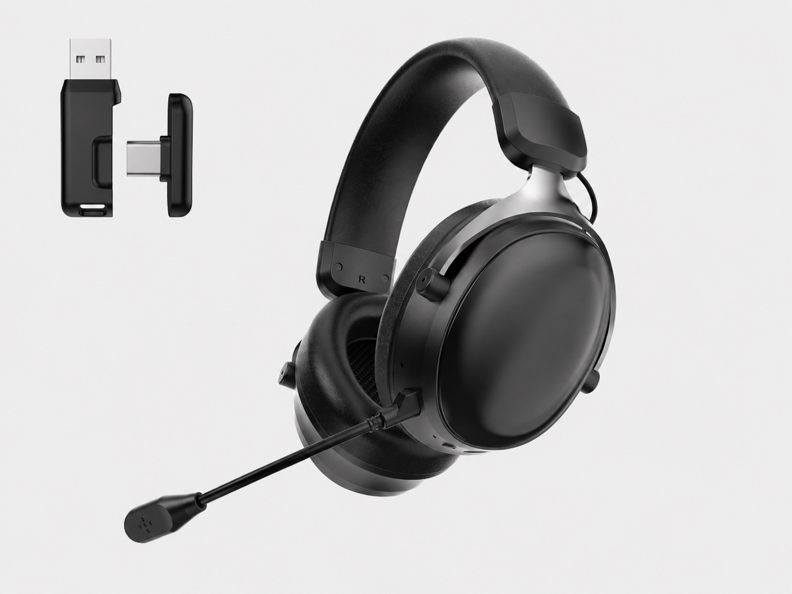

Business identity
Confirm the legal company name used on quotations, invoices, sample records and contact details before treating a supplier as the confirmed manufacturing route.

Buyer supplier evaluation
Evaluate the selected model and sample path before a supplier discussion turns into an RFQ. Confirm who is responsible for the project, which headset version is under review, and what evidence supports the microphone, connection, packaging and document questions. This checklist avoids relying on unsupported factory-size, capacity, certification or performance claims.

Short answer
A stronger shortlist connects supplier identity, the exact headset model, the sample version and the buyer's destination-market questions. Treat price as a project-specific quotation topic after the model, target devices, microphone route, accessory set, packaging scope and document needs are clear.
RFQ readiness
This practical pass helps a buyer decide whether a supplier is ready for a serious RFQ discussion.
Factory evidence
Factory claims work only when the evidence can be checked. Keep each claim tied to a current company record, a visible process, a selected model or a physical sample. The visual sample and quality review turns visible workshop references into model-specific buyer questions.
Confirm the legal company name used on quotations, invoices, sample records and contact details before treating a supplier as the confirmed manufacturing route.
Ask for a current headset-related factory video, workshop walkthrough or process images, and check whether the scene matches the headset category being discussed.
Clarify who prepares samples, checks accessories, handles packaging confirmation and answers revision questions after the buyer tests a headset.
If certificates or test reports are discussed, request the holder name, model scope, destination-market relevance and current document image before relying on the claim.
Keep a record of sample date, model code, accessories, firmware or connection route, packaging reference and every change requested after sample feedback.
Evaluation framework
The table below turns supplier review into a repeatable purchasing workflow. It avoids unsupported claims and keeps every decision tied to a sample or visible product record.
| Check | What to ask | Why it matters |
|---|---|---|
| Factory identity | Which company name, contact route and business document set will be used for the sample and quotation? | Keeps supplier identity traceable before sample, payment or contract discussion. |
| Factory evidence | Can the supplier provide current factory or workshop video, line images, process images or a live walkthrough for the headset route? | Separates visible process evidence from unsupported factory-size, capacity or certification claims. |
| Model identity | Which exact model code, connection version and color direction is being quoted? | Prevents comparing different versions as if they were the same headset. |
| Image evidence | Can the supplier show current headset, microphone, receiver, cable, accessory and packaging images? | Helps buyers verify visible facts before samples arrive. |
| Sample checks | What should be checked for sound, microphone, comfort, controls, connection and packaging? | Creates a record for approval or revision before bulk discussion. |
| Customization | Which logo, color, manual, packaging and accessory changes are available for this base model? | Separates confirmed product facts from project-specific branding work. |
| Documents | Which documents or labels need checking for the destination market and exact configuration? | Avoids assuming one universal document set for every product route. |
| RFQ package | What quantity range, sample timing, packaging direction and unresolved questions should be sent? | Makes the quotation request specific enough for a useful reply. |
Model shortlist
Start from the Gaming Headset Model Code Index when a buyer has a code, then use the linked product pages as concrete evidence. They are not a promise that every commercial or performance detail is fixed without sample confirmation.
G938 covers 2.4G, Bluetooth and wired direction, 53mm driver, detachable microphone, accessory images, packaging reference and published videos.
G941 adds receiver detail, black-red and white image directions, detachable boom microphone, official product video and microphone demonstration.
G936 fits buyers who want knitted fabric headband and ear-cushion evidence, RGB earcups, receiver, cable set and a real material-comparison video.
G926 provides a 50mm RGB 2.4G wireless headset direction with receiver, microphone, accessory and packaging image references.
G940 supports shortlists that need a separate wireless gaming headset direction with detachable microphone and RGB styling.
G935 fits projects where a lighter 2.4G wireless sample path, detachable microphone, accessory image evidence and official factory/product video are more relevant.
Sample workflow
A supplier comparison is strongest when the buyer can trace how a model moved from page evidence to sample feedback and then to RFQ.
Capture model code, current images, receiver or cable direction, microphone structure, accessory list and source of each claim.
Review appearance, fit, controls, connection setup, voice use, accessories and packaging before approving a version.
Practical checks should cover boom position, keyboard noise, fan noise, mute behavior and voice naturalness during calls or games.
Match headset, microphone, receiver, cables, manual, box direction and labeling questions with the selected model.
Connect destination-market document questions to the exact headset configuration rather than a broad category claim.
Share model codes, target market, quantity range, sample result, branding scope, packaging direction and unresolved questions.
Connection decision
Connection claims are often misunderstood in supplier comparisons. Confirm what the headset actually includes and how the intended buyer will use it.
Related pages
FAQ
Start with factory identity evidence, model evidence, current product images, sample traceability, microphone and connection setup, packaging scope, destination-market document questions and a complete RFQ. Compare suppliers only after the quoted sample versions are comparable.
Ask for the legal company name used on documents, a current factory or workshop video or live walkthrough, clear production or sample-preparation responsibility, and model-level document scope. Treat factory size, capacity and certification claims as unconfirmed until documents or live evidence are verified.
No. Workshop photos can support questions about visible process areas, but capacity, certification, inspection scope and individual test results should be confirmed separately for the selected model and project.
Useful evidence includes model identity, current product images, receiver or cable direction, microphone structure, accessory list, packaging reference, specification source and clear notes on which claims still require sample confirmation.
Include target market, sales channel, model codes, connection direction, quantity range, sample timing, logo or packaging needs, accessory questions and destination-market document requirements.
Buyers can start with G938 for a refined tri-mode direction, G941 for a lead tri-mode model with videos, G936 for a lightweight fabric-cushion direction, G926 for a 50mm RGB wireless direction, G940 for another wireless sample path, and G935 for a wireless model with an official factory and product video.
No. B2B quotations depend on selected model version, quantity range, branding, packaging, accessories, destination market, documents and sample plan.
Avoid relying on unsupported factory-size, capacity, certification, latency or price claims. Ask for current evidence, model-level documents and physical sample confirmation before approval.
Share your destination market, sales channel, model shortlist, connection direction, quantity range, sample timing, branding needs, packaging questions and required documents.